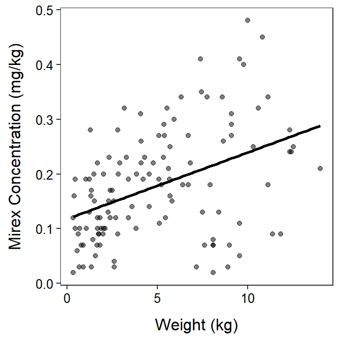
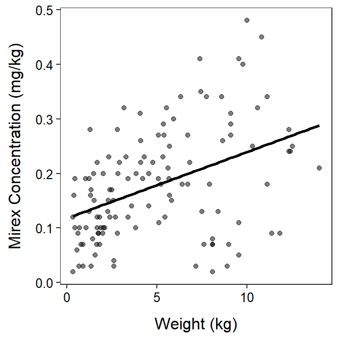
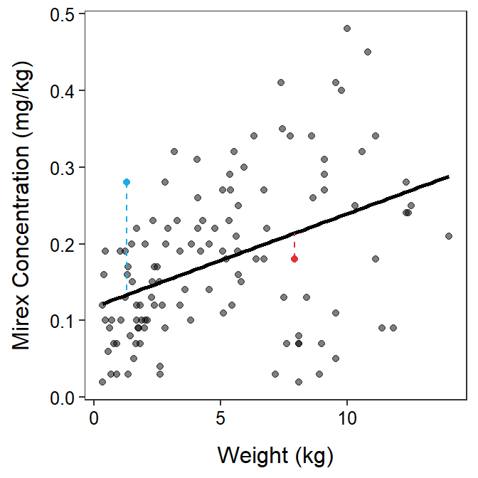
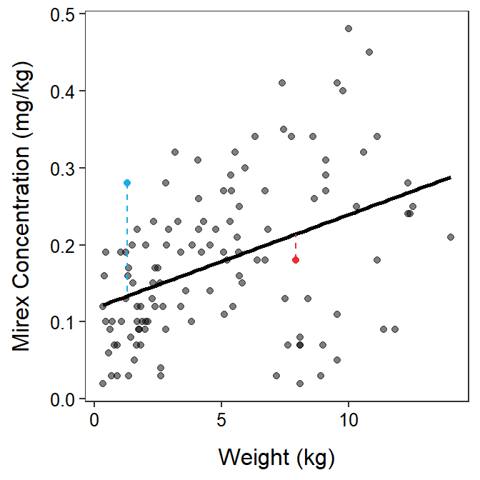
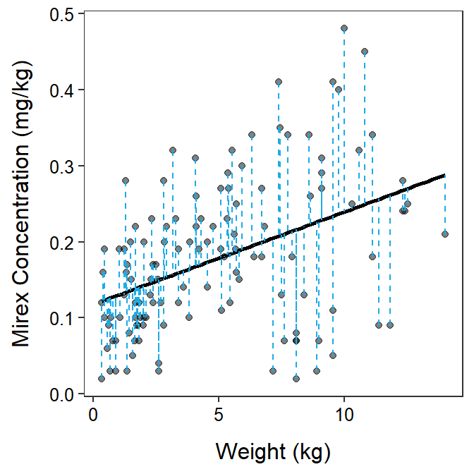
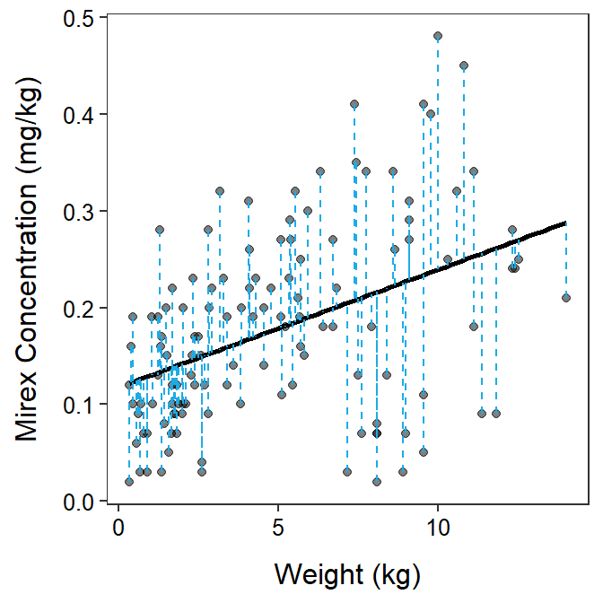

Module 3 Model Concepts
3.1 What is a Model
A model is a representation of something or some phenomena. It is usually a simplification or an abstraction that helps our understanding of the more complex reality. Weather forecasts, for example, are based on mathematical and statistical models (Figure 3.1).
Figure 3.1: Weather forecast for Redwoods, CA by meteorologist Dan Romano, an alum of MTH207.
A mathematical or statistical model is an equation or system of equations that is meant to characterize the general characters of the observations. Statistical models do not represent every observation perfectly, rather they attempt to best represent the “central tendency” of the observations. You have observed at least two statistical models in your introductory statistics course – the mean and the regression line (Figure 3.2).
 

Figure 3.2: Two examples of models seen in your introductory statistics course – two means (Left) and regression line (Right).
Models can predict an observation but generally not perfectly. For example, weather forecasters predict the temperature for tomorrow but it will most likely be off by (hopefully only) a small amount. Thus, an observed value of the response variable can be thought of as being equal to a value predicted from a model plus some deviation, or error, from that prediction; i.e.,
\[ \text{Observed Response} = \text{Model Predicted Response} + \text{error} \]
For example, tomorrow’s temperature may be 74oF, which is the predicted 76oF from the forecaster’s model plus -2oF “error.”
In statistics, one model for predicting the response variable for an individual in a group is to use the mean for the group. For example, my best guess at the height of an unknown student is to guess that they are average for “their group.” Obviously, most individuals are not truly average, so the specific individual will deviate from the mean. In Figure 3.3, one observation is shown as a red point, the predicted value for that individual is shown as a horizontal line at the mean for the individual’s group, and the “error” from this prediction is shown as the vertical red line.

Figure 3.3: Biological oxygen demand versus sample location (points) with group means shown by horizontal segments. The residual from a model that uses a separate mean for both groups is shown.
We always predict the response variable with a model.
In the context of a simple linear regression, the predicted value is obtained by plugging the observed value of the explanatory variable into the regression equation. Thus, the “error” is the vertical distance between an observed point and the corresponding point on the line (Figure 3.4).
Figure 3.4: Mirex concentration versus fish weight with a simple linear regression line show. The residual from the regression line model is shown.
Many hypothesis tests, including the 2-sample t-test, can be cast in a framework of competing statistical models. Using this framework requires assessing the relative fit (to data) and complexity of a model. The remainder of this module is about measuring fit and complexity of models. We will discuss fit and formally compare two models to see which is “best” in the next module.
Hypothesis tests in this course will be cast in a framework of two competing models.
3.2 Assessing Fit (SS)
3.2.1 A Residual
A residual is an estimate of the “error” discussed in the previous section. If you rearrange the formula shown above and replace “error” with “residual” you see that
\[ \text{residual} = \text{Observed Response} - \text{Model Predicted Response} \]
Visually a residual is the vertical distance between a point and the “model,” as shown by the vertical dashed lines in Figures 3.3 and 3.4. Residuals are vertical distances because they are the difference between two values of the response variable, which is always plotted on the y-axis.
Residuals are vertical distances between an observation and the model.
A residual is negative if the point is “below” the model prediction and positive if the point is “above” the model prediction. More importantly, the absolute value of the residual measures how close the model prediction is to the point or how well the model fits the individual point. A “large” residual (in an absolute value sense) means that the point is far from the model prediction and, thus, the model does not represent that point very well (Figure 3.5-Blue). A point with a “small” residual, in contrast, is near the model prediction and is thus well-represented by the model (Figure 3.5-Red).
 

Figure 3.5: Same plots as previously but with a “large” residual shown in red and a “small” residual shown in blue.
3.2.2 Residual Sum-of-Squares
If a residual measures how closely a model comes to a point then it stands to reason that the sum of all of the residuals measures how closely a model comes to all of the points. Unfortunately, because residuals are negative and positive they always sum to 0.4 Thus, the sum of all residuals is not a useful measure of the overall fit of a model.
Instead of summing residuals, statisticians sum squared residuals into a quantity called a residual sum-of-squares (RSS).5 Using the formula for a residual from above, an RSS for a given set of observed data and a model is computed with
\[ \text{RSS} = \sum_{data}\left(\text{Observed Response}-\text{Model Predicted Response}\right)^2 \] The full set of residuals required to compute an RSS are shown in Figure 3.6.
 

Figure 3.6: Same plots as previously but with all residuals shown.
The RSS measures how closely the model comes to all of the observations. Smaller values mean the observations are closer to the model.
The RSS is on an unfamiliar scale (squared residuals?) but it maintains the same conceptual idea that summing residuals would have. Mainly, the smaller the RSS the more closely the points are to the model.
As a value, the RSS is a measure of how poorly the model fits the data – i.e., small values are a good fit, large values are a poor fit. Thus, the RSS is often called “a measure of lack-of-fit” of the model to the observations.
An RSS is a measure of the “lack-of-fit” of a model to the data.
Unfortunately, the magnitude of the RSS is only useful in comparison to other RSS computed for different models from the same data. This will be discussed further in the next module.
3.3 Residual Degrees-of-Freedom
You used degrees-of-freedom (df) with t-tests and chi-square tests in your introductory statistics course. However, you likely did not discuss what degrees-of-freedom mean and where they come from. I will discuss this briefly here, but we will use df more in the next module.
Residual degrees-of-freedom (Rdf) are the number of observations that are “free” to vary if the sample size (\(n\)) and number of parameters estimated is known. As a simple example, suppose that we know that \(\bar{x}\)=13 from \(n\)=4 observations. With just this information can I tell you the values for the four observations? Clearly I cannot. If you give me one observation can I tell you the remaining three? No! If you tell me two? No! If you tell me three observations can I tell you the last observation? Yes, because the total of the four numbers must be 52 (=\(n\bar{x}\)=4×13); so the last number must be 52 minus the total of the three numbers you told me. In this case, three numbers were “free” to be any value before the last number was set. Thus, this case has three residual degrees-of-freedom.
Residual degrees-of-freedom are more complicated to explain in other situations, but generally
\[ \text{Rdf}=\text{Number of Observations}-\text{Number of Model Parameters} \]
In the example above, there were four observations (\(n\)) and one estimated parameter in the model – \(\bar{x}\) – so Rdf=4-1=3. In Figure 3.2-Left there are 20 observations and two parameters (i.e., two group means) so Rdf=20-2=18. In Figure 3.2-Right there are 122 observations and two parameters (i.e., the slope and intercept of the regression line) so Rdf=122-2=120.
As a general rule, parameter estimates are more precisely estimated with more residual degrees-of-freedom. Thus, models that “preserve” residual degrees-of-freedom (i.e., have fewer parameters) are preferred, all else being equal.
3.4 Mean-Squares
Sums-of-squares are useful measures of model fit, but they are largely uninterpretible on their own. However, if a sum-of-squares is divided by its corresponding degrees-of-freedom it is called a Mean-Square (MS). Mean-squares are the variance (i.e., squared standard deviation) of individuals around a given model. Mean-squares have useful mathematical properties as you will see in future modules. However, visually the square root of a mean-square loosely describes how far each point is from the model (i.e., the “errors”), on average. Many mean-squares are thus a measure of the “noise” around each model.
MS are variances; thus, the square root of MS are standard deviations